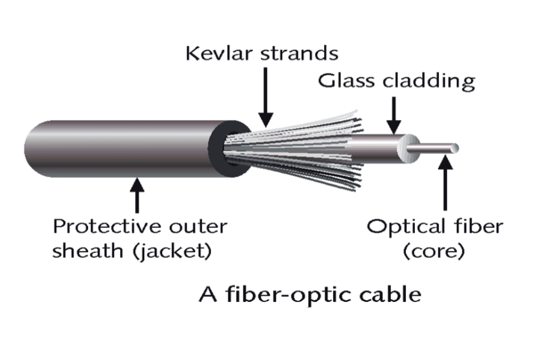
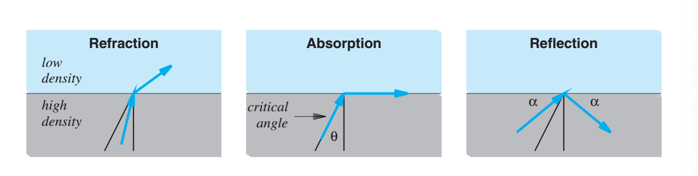
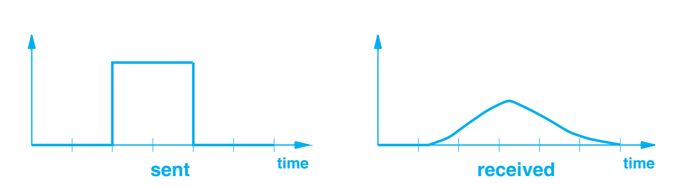

Fiber Optics Research
This topic is of importance as it is one of the most crucial transmission mediums utilized across
the
internet. Optical fiber is the most important type of media that uses light (Comer 119). Compared to
copper wiring which is also a widely utilized transmission medium in networks, optical fiber offers
characteristics that copper wiring cannot compete with. Optical fiber is immune to electrical noise,
has higher bandwidth and light traveling across a fiber does not attenuate as much as electrical
signals traveling across copper (Comer 121). Consider an example of a landline telephone, a fiber
optic strand is thicker than a human hair and can carry approximately 25,000 phone calls. Fiber
optic cables can carry information over great distances safely. They are utilized in multiple
domains as well such as computer networking, the medical field, cable TV and military and space
applications (Moscalu).
An optical fiber is used for communication in a single direction. One end of the fiber connects
to a
laser or LED utilized to transmit light, the other end of the fiber connects to a photosensitive
device used to detect incoming light. In order to execute two-way communication, two fibers are
used, one to carry information in each direction. Optical fibers are collected into a cable by
wrapping a plastic cover around them; a cable has at least two fibers, and a cable used between
large sites with multiple network devices may contain many fibers.

Optical fiber can’t be bent into a right angle but it is flexible enough to form into a circle with
diameter less than two inches without breaking. Light can travel around a bend in fiber because when
light encounters a boundary between two substances, its behavior depends on the density of the two
substances and the angle at which the light strikes the boundary. There exists a critical angle θ
measured with respect to a line that is perpendicular to the boundary. If the angle of incidence is
exactly equal to the critical angle, light travels along the boundary. When the angle is less than θ
degrees, light crosses the boundary and is refracted, when the angle is greater than θ degrees,
light is
reflected as if the boundary were a mirror (Comer 119).

Light stays inside an optical fiber due to a substance called cladding bonded to the fiber to form a
boundary. As light travels along this medium, light reflects off of the boundary. As light travels
down,
reflection absorbs a small amount of energy, this means that if a photon takes a zig-zag path that
reflects from the walls of the fiber multiple times, the photon will travel a longer distance than a
photon that takes a straight path. This means that a pulse of light sent at one end of a fiber
emerges
with less energy and is dispersed over time.

Dispersion is not an issue for short connections such as computers to nearby devices but becomes a
serious problem for long optical fibers such as those that are used between two cities or under an
ocean. Three forms of optical fibers have been invented to provide a choice between performance and
cost. There exists multimode, step index fiber which is the cheapest but performs the worst due to
the
boundary between the fiber and the cladding is abrupt causing light to reflect frequently leading to
high dispersion. Secondly we have multimode graded index fiber which is slightly more expensive than
multimode step index fiber and has the advantage of making the density of the fiber increase near
the
edge which reduces reflection and lowers dispersion. We finally have single mode fiber which is most
expensive and provides the least dispersion. The fiber has a smaller diameter and other properties
to
help reduce reflection. Single mode is used for long distances and higher bit rates (Comer 120).
Single mode fiber and equipment used at each end are designed to focus light meaning a pulse of
light
can travel thousands of kilometers without becoming dispersed. Minimal dispersion helps increase the
rate at which bits can be sent because a pulse corresponding to one bit does not disperse into the
pulse
that corresponds to a successive bit. The transmission mechanism in fiber optics is a light emitting
diode (LED) or injection laser diode (ILD) and the receiver mechanism is a photo-sensitive cell or
photodiode. LEDs and photo-sensitive cells are used for short distances and slower bit rates such as
multimode fiber and single mode fiber used over long distances with high bit rates require ILDs and
photodiodes (Comer 121).
Comer, Douglas. Computer Networks and Internets. Pearson, 2015.
Moscalu, Lorena. “The Importance of Fiber Optic Cables in Our Lives.” PeakOptical A/S, 8 Nov. 2018,
peakoptical.com/2018/06/how-important-is-fiber-optic/.
Jafarian, Haadi. “Introduction to Computer Networks.” University of Colorado Denver, 4 Feb. 2020,
University of Colorado Denver. Lecture.